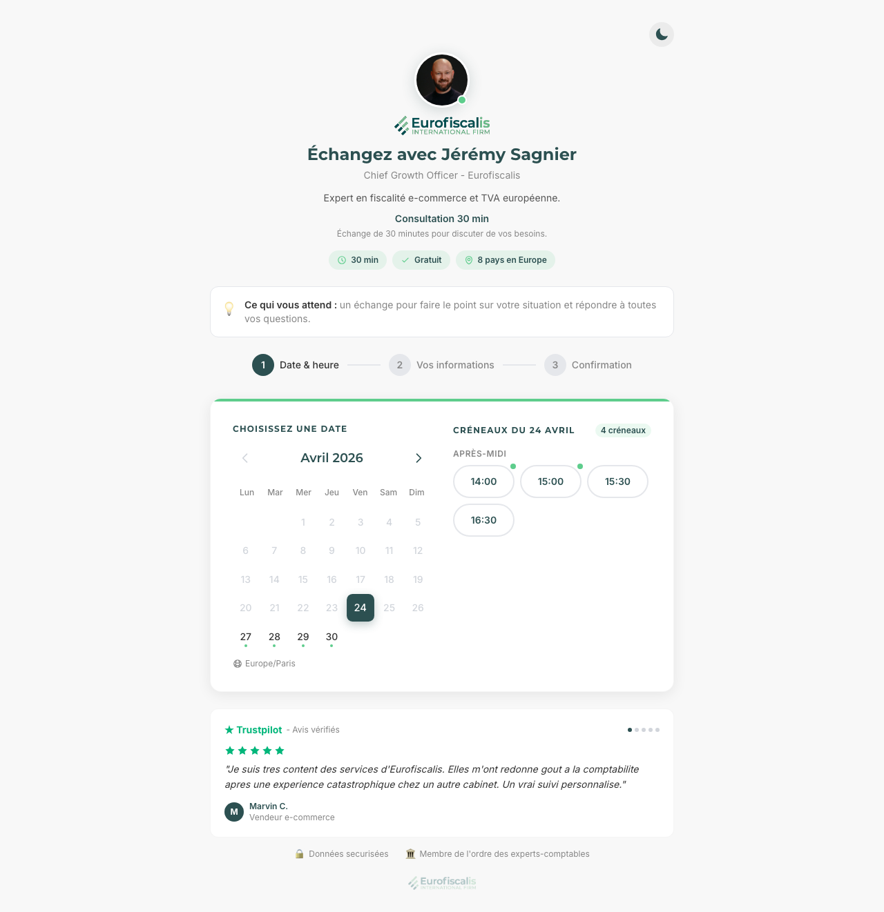
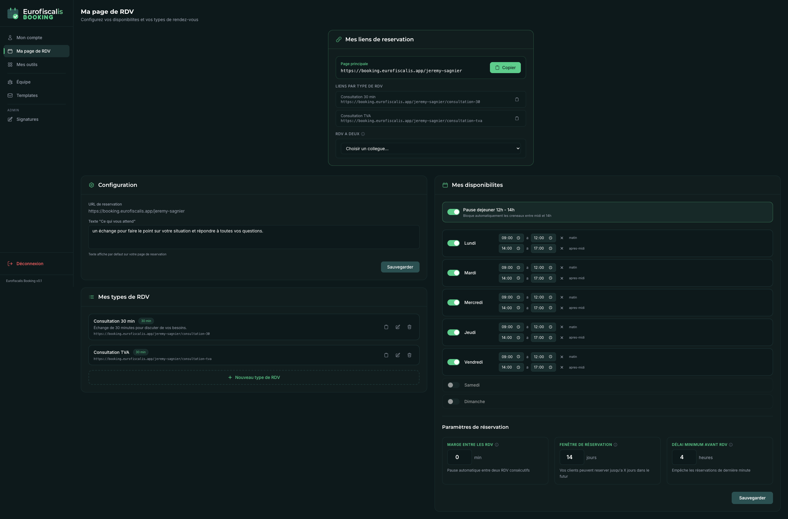
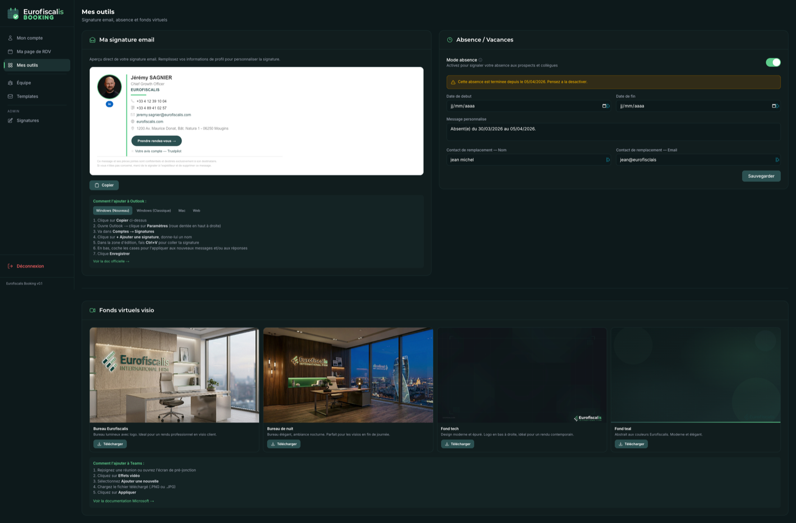

Un dimanche soir de mars, j'en ai eu marre de payer deux abonnements (Calendly pour les rendez-vous, Letsignit pour les signatures email) avec des résultats moyens et zéro contrôle sur la charte. Une semaine plus tard, on avait notre propre outil maison qui faisait les deux. À notre charte, hébergé chez nous, avec un back-office complet où chaque conseiller pilote sa page et sa signature. Aujourd'hui 20 personnes l'utilisent au quotidien. Le récit honnête, sans filtre, de comment on a fait.
Pour planter le décor : Eurofiscalis, c'est une boîte de fiscalité internationale fondée par mon frère Kevin en 2017. On accompagne des e-commerçants partout en Europe sur la TVA, l'autoliquidation, les déclarations en ligne. Et comme tout cabinet de conseil, on prend beaucoup de rendez-vous. Premier contact, suivi client, audit, présentation commerciale. Plusieurs centaines par mois, sur 20 personnes.
Pendant longtemps, on a fait ça avec Calendly. Outil parfait sur le papier : tu donnes ton lien, le client choisit son créneau, l'événement apparaît dans ton agenda. C'est devenu un standard du marché. Plan d'équipe à 16 dollars par utilisateur et par mois (cf. Calendly pricing). Multiplié par 20 commerciaux et conseillers, ça nous coûtait autour de 320 dollars chaque mois. Pas la mort.
En parallèle, on payait aussi Letsignit, un autre logiciel français spécialisé dans la signature email. L'idée · que tous les conseillers aient une signature uniforme dans Outlook (photo, titre, téléphone, lien de réservation, logo Eurofiscalis), maintenue depuis une console centrale. Compte autour de 80 € par mois pour 20 utilisateurs sur le plan standard. Là encore, pas la mort, mais ça finissait par faire ~ 375 € chaque mois entre les deux outils, juste pour gérer des rendez-vous et des signatures.
Mais un dimanche soir de mars, en regardant la page de booking d'une conseillère qui venait d'arriver, j'ai bloqué. La photo n'était pas au bon format. Le titre était mal centré. Les couleurs n'étaient pas les nôtres. Aucun avis client en bas. Rien qui dise « tu es sur le point de rencontrer quelqu'un d'Eurofiscalis ». C'était une page Calendly de plus, comme il en existe des millions. Et la signature email de la même conseillère ne s'affichait pas correctement chez la moitié de ses destinataires (souci classique de Letsignit avec Outlook Windows ancienne génération).
L'argent, j'aurais pu vivre avec. Le souci, c'était l'impossibilité de personnaliser correctement. Calendly te laisse changer une couleur d'accent et basta · pas de mise en page, pas de section témoignages, pas de logo intégré aux confirmations, pas de template d'email aux couleurs maison. Letsignit, c'est plus souple sur le visuel mais ça reste un logiciel tiers qui rend ta signature dépendante d'un service extérieur. Et chaque conseiller faisait sa cuisine de son côté · résultat, 20 pages dépareillées d'un côté, des signatures qui se cassaient dans Outlook de l'autre.
Je me suis fait la liste de ce qu'on aurait voulu si on partait d'une page blanche. Et à ma grande surprise, ce n'était pas si long.
Je l'ai relue trois fois. Je me suis dit : « si je donne cette liste à Claude Code lundi matin, on l'a en combien de temps ? Et tant qu'à faire, autant intégrer la signature email dans le même outil pour tuer Letsignit aussi. » J'ai pris 5 minutes pour vérifier que personne ne vendait déjà ça en marque blanche · les outils existants étaient soit encore plus chers, soit encore plus rigides, soit ne couvraient qu'une moitié du besoin. C'était bon. Lundi matin, je me lançais.
Pour que tu visualises avant la suite : voici à quoi ressemble ma propre page de réservation aujourd'hui, exactement comme un client la voit. C'est ce qu'on a construit en une semaine. La charte est respectée, la photo est bien intégrée, les badges (durée, prix, périmètre) sont alignés, les avis Trustpilot apparaissent en bas, et le calendrier affiche les vrais créneaux disponibles dans mon Outlook en temps réel.

Le 24 avril (jour sélectionné en vert sur la capture), j'ai 4 créneaux ouverts l'après-midi. Si je bloque un de ces créneaux dans Outlook, il disparaît de la page dans les 60 secondes. Si quelqu'un réserve, l'événement apparaît dans mon agenda avant même que je ferme l'onglet. Et le client reçoit un email de confirmation à la charte Eurofiscalis dans la foulée, suivi d'un rappel J-1 et d'un autre 15 minutes avant le rendez-vous.
Ce qui m'a fait le plus plaisir au lancement, c'est que les 20 conseillers ont leur version EXACTEMENT identique à la mienne. Même structure, même boutons, mêmes couleurs. Juste la photo, le pitch et les disponibilités qui changent. L'harmonie d'équipe que je cherchais, on l'a.
Voilà comment ça s'est passé concrètement, du déclic dimanche soir à la mise en ligne vendredi. Pour info : moi je ne suis pas développeur. Je suis entrepreneur, je sais utiliser Claude Code (l'outil d'IA qui écrit le code à ma place pendant que je guide), et c'est tout. Tout ce qui suit, je l'ai fait avec Claude Code en pair-programming (à deux sur le même projet, l'IA tape, je guide).
Je liste sur papier les 6 fonctions à reproduire (charte, page identique, avis, Outlook, emails, widget). Je vérifie que personne ne vend déjà ça correctement. Je dors là-dessus.
J'ouvre Claude Code dans un nouveau dossier. Je demande un projet Next.js (le moteur de site web moderne), avec une page de réservation par conseiller à l'adresse /[slug]. Le soir, j'ai un calendrier qui s'affiche, sans données réelles, mais bien à la charte Eurofiscalis.
Je branche Supabase (la base de données dans le cloud, équivalent open source de Firebase). Je crée 4 tables · utilisateurs, types de RDV, disponibilités, rendez-vous. Le soir, un conseiller peut se connecter, configurer ses horaires, recevoir une vraie réservation enregistrée en base.
La grosse étape · brancher Microsoft Graph (le pont qui parle à Outlook). Je galère 6 heures sur les fuseaux horaires (un événement qui se passe à 14h Paris, Microsoft me le renvoie en heure UTC, et mon site l'affichait à 12h). Une fois résolu, magie · les agendas Outlook des conseillers nourrissent automatiquement les pages de booking.
Premier essai · envoyer les emails via Microsoft Graph (puisqu'on est déjà connectés). Mauvaise idée, ça fail une fois sur dix sans raison. Je bascule sur Resend (un service spécialisé email, qui marche du premier coup). Je dessine 3 templates · confirmation, rappel J-1, rappel 15 minutes avant. Tous à la charte Eurofiscalis.
Je passe le projet à Max, notre développeur. Mission · audit sécurité avant la mise en ligne (vérifier les protections, les permissions de la base, les attaques classiques). Il trouve 3 trucs à corriger en 2 heures, on les fixe ensemble.
On déploie sur Vercel (l'hébergeur qui fait tourner les sites Next.js en quelques clics). On pointe un nom de domaine · booking.eurofiscalis.app. Les 20 premiers conseillers sont créés, photo + pitch chargés. À 19h, le premier rendez-vous est pris par un client réel.
J'avais cru qu'on aurait juste 20 pages publiques + Outlook synchronisé. Erreur. Sans interface admin, je devais aller dans la base de données à la main pour ajouter un conseiller, changer son pitch, mettre à jour sa photo. Ingérable. On a construit en deux semaines un vrai back-office complet · onboarding autonome, configuration page perso, gestion des dispos, générateur de signature email, fonds virtuels visio téléchargeables.
On itère en continu sur les retours de l'équipe. Max repasse dessus pour un audit complet (5 phases · failles XSS, permissions base, monitoring, accessibilité). On ajoute la fonction RDV à 2 (deux conseillers présents en même temps), un mode debug, des rappels 15 minutes avant. C'est devenu l'outil quotidien de toute la boîte.
L'outil intéressant, ce n'est plus celui qui sait tout faire (Calendly fait 100 trucs dont j'utilise 5). C'est celui qui fait exactement ce dont tu as besoin, à TON image. Et avec Claude Code, le seuil pour construire le sien est devenu ridiculement bas. Tu n'as plus besoin d'une équipe dev, tu as besoin de savoir ce que tu veux et de guider.
Au-delà de la charte (qui était le déclic), trois fonctions ont fait que les 20 conseillers ont adopté l'outil sans rouspéter. Aucune n'existait sur Calendly de la même manière.
Un conseiller peut générer un lien spécial qui réserve un créneau pour lui ET un collègue. L'outil calcule automatiquement les créneaux où les deux sont libres. Hyper utile pour les onboarding clients où tu veux faire passer le client à ton successeur.
L'outil génère aussi la signature email de chaque conseiller à partir des mêmes infos (photo, titre, pitch). Un clic, tu copies-colles dans Outlook. Tous les commerciaux ont la même signature impeccable, sans effort. Fini les signatures bricolées avec 4 polices différentes.
Une ligne de code à coller sur le site Eurofiscalis principal, et n'importe quelle page peut afficher un calendrier de réservation directement, sans renvoyer le visiteur ailleurs. Le client ne voit jamais qu'il quitte notre univers.
Le rendez-vous à deux, en particulier, a complètement débloqué une tension qu'on avait depuis longtemps · les passages de relais entre commerciaux et conseillers techniques. Avant, on enchaînait deux rendez-vous distincts, le client avait l'impression de répéter son histoire deux fois. Maintenant, c'est un seul créneau, deux personnes en face, un vrai sentiment de continuité.
Ce que je n'avais pas anticipé en démarrant : l'outil public, ce n'est que la moitié du travail. L'autre moitié, c'est tout ce que l'équipe doit pouvoir piloter elle-même · configurer sa page, ouvrir et fermer ses créneaux, modifier son pitch, mettre à jour sa photo, gérer ses absences, générer sa signature email. Au début, je faisais tout ça à la main dans la base de données. Au bout de 5 conseillers, c'était ingérable. On a construit un vrai back-office en deux semaines de plus.
C'est la page que voit chaque conseiller pour piloter son propre profil. Une seule URL (/ma-page-rdv), tout est dedans · le lien public à partager, les types de RDV (Consultation 30 min, Consultation TVA, ce que tu veux), les disponibilités semaine par semaine avec pause déjeuner, les paramètres de réservation (combien de jours à l'avance, combien d'heures avant minimum). Et la fameuse fonction RDV à 2 · tu cliques, tu choisis un collègue, l'outil te génère un lien spécial qui ne propose que les créneaux où vous êtes tous les deux libres.

/ma-page-rdv · chaque conseiller pilote la sienne en autonomie
Ce qui a fait la différence côté équipe, c'est l'autonomie totale. Avant le back-office, une conseillère qui voulait changer son pitch m'envoyait un mail, j'ouvrais Supabase, je modifiais à la main, c'était en ligne le soir. Maintenant elle va dans /ma-page-rdv, elle modifie le champ, c'est en ligne dans 10 secondes. Pour elle, sentiment de contrôle. Pour moi, fin des 50 demandes par semaine.
Sur la page /mes-outils, tu trouves un générateur qui construit la signature email officielle de chaque conseiller à partir des mêmes données (photo, titre, téléphone, lien de réservation, sites Eurofiscalis). Tu cliques sur « Copier », tu colles dans Outlook, c'est fini. Toute l'équipe a la même signature impeccable. Avec le code VML (un format ancien que Microsoft impose pour que les images circulaires s'affichent dans Outlook Windows legacy) · ça m'a coûté 4 itérations à comprendre, mais une fois en place, ça marche partout.
Cette page /mes-outils, c'est ce qui nous a permis de résilier Letsignit, l'outil de signature email qu'on payait environ 80 € par mois. La fonction est plus simple (pas d'éditeur visuel sophistiqué, pas de campagnes promotionnelles intégrées dans la signature) mais elle fait l'essentiel · une signature unifiée pour les 20 conseillers, à la charte, qui s'affiche correctement dans Outlook. C'est tout ce dont on avait besoin. 80 € de plus économisés chaque mois.

/mes-outils · signature email · absences · fonds virtuels EurofiscalisSur cette même page, deux outils que je n'avais pas prévus mais qui sont vite devenus indispensables :
Pour faire le tour, voici les 5 pages que tout conseiller voit dans la barre latérale gauche :
| Page | Pour qui | À quoi ça sert |
|---|---|---|
/mon-compte | Tout le monde | Email, mot de passe, fuseau horaire, photo de profil avec recadrage en cercle. |
/ma-page-rdv | Tout le monde | Page publique : titre, pitch, types de RDV, disponibilités, paramètres, RDV à 2. |
/mes-outils | Tout le monde | Signature email, gestion d'absence, fonds virtuels visio, instructions Teams. |
/equipe | Admins seulement | Vue d'ensemble des 20 conseillers, qui a connecté Outlook, qui non. Création / désactivation de comptes. |
/templates | Admins seulement | Édition des templates email (confirmation, rappel J-1, rappel 15 min). Aperçu en direct. |
Quand un nouveau conseiller arrive chez Eurofiscalis, il reçoit un lien d'invitation. Il clique, crée son compte, configure sa page perso (titre, pitch, photo, types de RDV, dispos) en 10 minutes, et c'est en ligne. Zéro intervention de ma part. Cette fonction toute simple a fait que les 20 conseillers ont été déployés en moins d'une journée, alors que l'inscription manuelle un par un m'aurait pris une semaine.
Trois leçons qui valent pour n'importe quel outil interne, pas que pour un Calendly maison :
Si tu n'as jamais codé, tu peux sauter cette section sans dommage. Mais beaucoup de gens m'ont demandé « avec quoi vous l'avez fait ? » · voici la réponse, avec un mot d'explication pour chaque outil.
| Outil | À quoi ça sert | Pourquoi celui-là |
|---|---|---|
| Next.js | Le moteur du site (l'équivalent du moteur dans une voiture) | C'est le standard moderne pour faire un site rapide, et Claude Code le maîtrise très bien. |
| Supabase | La base de données dans le cloud (où sont stockés les conseillers, les RDV, les dispos) | Gratuit jusqu'à un certain volume, simple à brancher, et il gère aussi les comptes utilisateurs. |
| Microsoft Graph | Le pont qui permet à notre site de parler à Outlook (lire l'agenda, créer un événement) | Obligatoire puisqu'on est en environnement Microsoft 365. Pas le plus agréable, mais c'est le seul. |
| Resend | Le service qui envoie les emails de confirmation et de rappel | Plus fiable que d'envoyer via Microsoft Graph. Marche du premier coup et a une interface claire. |
| Vercel | L'hébergeur qui fait tourner le site 24h/24 | Couplage parfait avec Next.js · tu pousses ton code sur GitHub, c'est en ligne en 30 secondes. |
| Sentry | Le système qui te prévient quand quelque chose casse en prod | Indispensable quand 20 personnes utilisent l'outil et que tu ne peux pas tester chaque réservation à la main. |
Si tu connais ces outils, tu vois que rien n'est exotique. C'est un assemblage standard qu'utilise n'importe quelle startup web en 2026. Ce qui change la donne, c'est Claude Code, qui m'a permis d'orchestrer tout ça sans être développeur. Lui aussi est devenu un standard.
Beaucoup de monde m'a demandé « OK mais le prix au final, c'est quoi ? ». Voilà la comparaison franche.
| Solution | Coût mensuel | Coût annuel |
|---|---|---|
| Calendly Teams · 16 $/utilisateur × 20 personnes | ~ 320 $ (~ 295 €) | ~ 3 540 € |
| Letsignit · plan standard 20 utilisateurs | ~ 80 € | ~ 960 € |
| Total des deux SaaS | ~ 375 € | ~ 4 500 € |
| Notre booking interne · Vercel + Supabase + Resend cumulés | ~ 30 € | ~ 360 € |
| Économie annuelle | ~ 4 140 € | |
Évidemment, il faut nuancer. Notre coût ne compte pas mon temps (5 jours sur la base + 2 semaines sur le back-office) ni celui de Max (1 jour). Si tu valorises ces journées au prix d'un développeur freelance (~ 600 € jour), tu rajoutes 9 000 € de « coût caché » la première année. Donc la première année, on est encore en investissement.
L'économie devient massive à partir de la deuxième année. Et surtout, on n'est plus dépendants de deux fournisseurs · si Calendly ou Letsignit triplent leurs tarifs demain, ferment une fonction qu'on aimait, ou changent d'orientation produit, ça ne nous regarde plus.
Un outil interne, ce n'est pas gratuit dans la durée. Tu dois le maintenir · corriger les bugs, mettre à jour les bibliothèques, gérer les nouveaux cas d'usage. Compte 1-2 jours par mois de petite maintenance. Si tu n'as ni Claude Code, ni un dev disponible pour ça, mieux vaut rester sur l'abonnement.
Je ne te raconte pas que tout s'est passé sans accroc. Voici les 4 vrais écueils qu'on a découverts en route, et comment on les a réglés.
Tu crées un événement à 14h Paris. Outlook te le renvoie en UTC (l'heure de référence universelle, soit 12h). Si tu ne convertis pas correctement, ton site affiche les créneaux à des heures qui n'existent pas. J'ai passé 6 heures dessus avec Claude Code, on a fini par utiliser une bibliothèque dédiée (date-fns-tz) qui fait la conversion proprement. Règle d'or · ne jamais bricoler la conversion à la main, prendre une bibliothèque éprouvée.
Deux clients qui cliquent sur le même créneau exactement à la même seconde · les deux peuvent réserver, et ton conseiller a deux RDV en parallèle. C'est rare mais ça arrive. La solution s'appelle un « index unique en base de données » · tu obliges Supabase à refuser le second créneau identique. Une fois en place, problème réglé pour toujours.
Premier essai d'envoi des confirmations · on passe par Microsoft Graph (puisqu'on est déjà connectés). Une fois sur dix, l'envoi échoue, sans erreur, sans retour. Le client n'a jamais sa confirmation. Catastrophe. On a basculé sur Resend (un service spécialisé email). Plus simple, plus fiable, jamais un raté depuis 4 semaines de prod.
Quand un conseiller connecte son Outlook, il reçoit un « jeton » (un mot de passe temporaire qui sert à parler à Microsoft). Ce jeton expire toutes les heures. Si tu ne le rafraîchis pas à temps, sa page ne marche plus jusqu'à ce qu'il se reconnecte. On a fini par mettre un système qui rafraîchit le jeton automatiquement avant qu'il périme. Invisible pour l'utilisateur, mais sans ça l'outil aurait été inutilisable.
Aucun de ces pièges n'est exotique. Tu les retrouves dans n'importe quel projet qui synchronise avec un agenda. La différence, c'est qu'on les a découverts en construisant, et qu'on a appris à les gérer correctement avant la mise en ligne. Le mercredi de la nuit blanche reste un beau souvenir.
Honnêtement, refaire un Calendly maison n'a de sens que si tu coches au moins deux de ces critères :
Si tu coches zéro ou un, reste sur Calendly. C'est très bien fait, et ton temps vaut probablement plus que les 200 € par mois que tu économiserais.
L'IA générative a basculé l'équation classique « acheter ou construire ». Pour des outils internes spécifiques, construire à TA charte est devenu réaliste pour des entreprises de 20 personnes. Il y a 3 ans, c'était réservé aux startups dotées d'une équipe tech. Plus aujourd'hui.
Je n'ai pas ouvert le code en open source (c'est l'outil interne d'Eurofiscalis), mais je peux te dire par où commencer si tu veux te lancer dans un projet similaire ou autre · refaire ton CRM, ton outil de devis, ta gestion de projet à ta charte.
Si tu lis cet article et que tu te demandes « est-ce que je pourrais le faire chez moi ? », la réponse honnête est probablement oui, si tu as 5 jours devant toi et un peu de patience. Le seuil n'a jamais été aussi bas. Et la satisfaction de voir 20 personnes utiliser tous les jours un outil que tu as construit, ça vaut largement les 5 nuits courtes.
Si tu veux que je te raconte d'autres projets internes qu'on construit comme ça (en ce moment je travaille sur un agent qui qualifie nos leads sur WhatsApp), inscris-toi à AI Playbook · ma veille hebdomadaire. Et si tu lances un projet similaire, écris-moi, j'adore lire les retours d'autres entrepreneurs qui essaient. Je réponds à tout.
Le vrai déclencheur n'était pas le prix mais l'impossibilité de personnaliser correctement les pages de réservation et les signatures email à notre charte Eurofiscalis. Calendly ne laissait changer qu'une couleur d'accent, et les 20 conseillers avaient des pages dépareillées. Tant qu'à refaire, on a tué Letsignit dans la foulée.
Calendly Teams à 16 dollars par utilisateur et par mois, soit environ 295 € pour 20 personnes. Letsignit autour de 80 € par mois sur le plan standard. Total cumulé d'environ 375 € par mois, soit à peu près 4 500 € par an.
Cinq jours pour la base, du dimanche soir (le déclic) au vendredi soir (mise en ligne). Puis deux semaines supplémentaires pour construire le back-office complet (onboarding autonome, signatures, fonds visio) que je n'avais pas anticipé au départ.
Next.js pour le moteur du site, Supabase pour la base de données, Microsoft Graph pour la synchronisation Outlook, Resend pour les emails, Vercel pour l'hébergement et Sentry pour le monitoring. Rien d'exotique, c'est un assemblage standard d'outils qu'utilise n'importe quelle startup web en 2026.
Un conseiller génère un lien spécial qui réserve un créneau pour lui ET un collègue choisi. L'outil calcule automatiquement les créneaux où les deux sont libres dans Outlook. Très utile pour les passages de relais entre commercial et conseiller technique : un seul créneau, deux personnes en face, le client n'a plus à répéter son histoire deux fois.
20 conseillers chez Eurofiscalis l'utilisent tous les jours. Plus de 500 rendez-vous ont été passés depuis la mise en ligne en avril 2026.
Environ 30 € par mois cumulés pour Vercel, Supabase et Resend. Soit autour de 360 € par an, contre 4 500 € avant. Économie d'environ 4 140 € par an. Ce coût ne compte pas le temps de construction (5 jours + 2 semaines) ni la maintenance (1 à 2 jours par mois).
Les envois via Microsoft Graph plantaient en silence environ une fois sur dix, sans erreur ni retour, et les clients ne recevaient pas leur confirmation. Resend, un service spécialisé email, marche du premier coup et n'a pas eu un seul raté en quatre semaines de production. La spécialisation a primé sur l'intégration.
Non. Je ne suis pas développeur, je suis entrepreneur, et tout a été construit avec Claude Code en pair-programming (l'IA tape, je guide). Max, notre développeur, est seulement intervenu sur la fin pour l'audit sécurité avant la mise en ligne. Le seuil pour construire son propre outil interne est devenu accessible.
Quatre pièges principaux : la gestion des fuseaux horaires (résolue avec date-fns-tz), les doubles réservations sur le même créneau (réglées par un index unique en base), les emails Microsoft Graph qui plantaient en silence (basculement sur Resend) et les jetons Outlook qui expirent toutes les heures (système de rafraîchissement automatique).
Une info obsolète, un chiffre qui a bougé, un détail technique faux ? Écris-moi à sagnier.jeremy@gmail.com · je corrige en 48h max et je note la date de MAJ en haut de l'article. Les retours terrain valent mille fois les articles — je lis tout, je réponds.
Chaque semaine, je raconte les outils internes qu'on construit chez Eurofiscalis et les choses que je teste pour moi. Pas de blabla, pas de pub. Désinscription en un clic, je ne le prends pas mal.
Voir les newsletters →